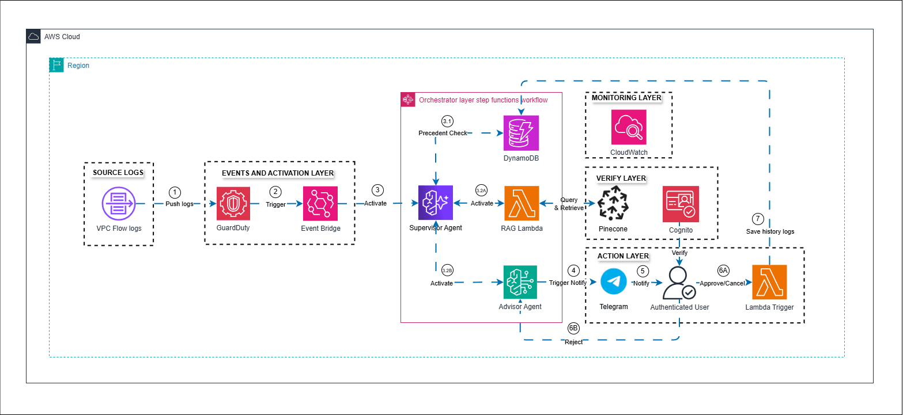

AWS FIRST CLOUD AI JOURNEY – PROJECT PLAN
Cloud-Sentinel – SOAR System for Critical Infrastructure on AWS
0. APPENDIX
- AWS FIRST CLOUD AI JOURNEY – PROJECT PLAN
- Cloud-Sentinel – SOAR System for Critical Infrastructure on AWS
1. CONTEXT AND DRIVERS
1.1 Executive Summary
1. Customer Context & Problem
- Problem: Organizations operating critical infrastructure on AWS (Banking, Finance, Fintech) are facing an ever-increasing volume of security alerts from services such as GuardDuty, CloudTrail, and VPC Flow Logs. Current analysis and response processes are largely manual: security analysts must read each finding, look up history, draft a plan, and execute actions – leading to slow response times, high risk of oversight, and significant operational burden. In addition, a high rate of false positives reduces efficiency and trust in the monitoring system.
- Driver: The urgent need is to build a SOAR (Security Orchestration, Automation and Response) system capable of automating the entire process from detection to response, while applying artificial intelligence to eliminate false positives and improve analysis quality – while keeping humans as the final decision-makers.
2. Business & Technical Objectives
| Objective Type | Details |
|---|---|
| Business | - Reduce Mean Time to Respond from hours to minutes. - Reduce operational load on the security team through automated analysis and action recommendations. - Optimize operational costs: Serverless architecture ensures near-zero cost when no incidents occur. |
| Technical | - Smart Detection: Integrate Amazon GuardDuty analyzing VPC Flow Logs, DNS logs, and CloudTrail events. - Multi-Agent Cross-Evaluation: Supervisor Agent and Advisor Agent (Amazon Bedrock – Claude 3.5 Sonnet) collaborate to eliminate false positives and generate structured response plans. - RAG Knowledge Base: Pinecone Vector Database provides context guidelines for AI Agent, reducing hallucinations. - Human-in-the-Loop: Analyst approves via Telegram before actions are executed – controlling automation risk. - Full IaC: Entire infrastructure managed by Terraform, reusable and controllable. |
3. Use Cases
Main flows handled by Cloud-Sentinel:
- Automated Detection and Analysis: When GuardDuty generates a finding (e.g., SSH Brute Force, Port Scan, IAM anomaly), the system automatically triggers the analysis pipeline without manual intervention.
- Precedent Lookup: Check DynamoDB to see if this type of attack has occurred on that resource within the last 90 days, providing historical context to the AI.
- Structured Response Planning: Advisor Agent produces a 7‑part plan including immediate actions, investigation steps, long‑term recommendations, and a rollback plan.
- Telegram Approval: Analyst receives an alert with the response plan and can press Approve/Reject directly on their phone.
- Action Execution: After approval, the system executes protective actions (block IP, isolate instance, revoke IAM keys) and stores results in S3 and DynamoDB.
4. Consulting Service Summary
Professional services provided to achieve the above objectives include:
- Event-Driven SOAR Architecture Design: Build a 6‑state pipeline on AWS Step Functions combined with Multi-Agent AI on Amazon Bedrock.
- Infrastructure as Code Deployment: Entire infrastructure (Lambda, Step Functions, Bedrock Agents, DynamoDB, S3, API Gateway, Cognito) defined and managed with Terraform.
- RAG Pipeline Integration: Set up Pinecone vector search flow with Amazon Titan Embeddings to provide guideline context for AI Agents.
- Serverless Cost Optimisation: Design a pay-as-you-go architecture, with near-zero maintenance cost when no incidents occur.
1.2 Project Success Criteria
Project success is evaluated based on the following criteria:
- End-to-end pipeline works: From mock finding input to Telegram approval message and execution results written to S3/DynamoDB – all 6 states of the Step Function complete without errors.
- Multi-Agent AI produces structured output: Supervisor Agent and Advisor Agent collaborate to generate a 7‑part response plan appropriate for the input incident type.
- Human-in-the-Loop works: Analyst receives Telegram message, presses Approve/Reject, and the Step Function reacts correctly (continues or stops the pipeline).
- Cost optimisation: Total operational cost at ~14.46 USD/month; near-zero cost when no incidents occur.
- Complete IaC: Entire infrastructure can be created and destroyed by
terraform apply/terraform destroywithout any manual console actions. - Scalability: Serverless architecture automatically scales with increasing finding volume without configuration changes.
1.3 Assumptions and Prerequisites
The project is based on the following assumptions and constraints:
- AWS Service Dependencies: The project depends on the availability of Amazon Bedrock (model access), GuardDuty, Step Functions and related services in region
ap-southeast-1. - Bedrock model access: Assumes the deployer has already enabled access to the
claude-3-5-sonnetmodel in the AWS Console before running the pipeline. - Pinecone knowledge base: The system works stably even if the Pinecone index has no guideline data (the Agent will reason from incident context). However, response plan quality improves significantly when guidelines are present.
- Execution scope: The Lambda Executor is currently in simulation mode – it does not actually modify AWS resources. This is an intentional design for safety in workshop and demo environments.
- EventBridge trigger: In the current version, the pipeline is triggered manually with a mock event rather than automatically from GuardDuty via EventBridge. This limitation is noted for future completion.
- AI risks: Although RAG and Multi-Agent structure are used to minimise hallucinations, the AI’s response plan must still be reviewed by a security analyst before execution – guaranteed by the Human-in-the-Loop mechanism.
2. SOLUTION ARCHITECTURE
2.1 Technical Architecture Diagram
The proposed architecture is fully Serverless Event-Driven on AWS, organised into 4 layers: Detection, Intelligence & Orchestration, Response & Interaction, and Storage.

Main components:
- Detection Layer: Amazon GuardDuty analyses VPC Flow Logs, DNS logs, CloudTrail events → generates finding →
lambda_parsernormalises it. - Orchestration Layer: AWS Step Functions (6 states) coordinates the whole pipeline from parse to execute.
- Intelligence Layer: Lambda
lambda_history(DynamoDB), Lambdalambda_knowledge(Pinecone RAG), Lambdalambda_advisorsequentially invokes Supervisor Agent and Advisor Agent on Amazon Bedrock. - Response Layer: Lambda
lambda_telegram_sendersends plan via Telegram Bot, API Gateway receives webhook callback, Lambdalambda_approval_handlerauthenticates via Amazon Cognito and resumes the Step Function. - Execution Layer: Lambda
lambda_executorexecutes protective actions, writes results to DynamoDBincident_historyand S3.
2.2 Technical Plan
The project team develops and deploys the system according to the following technical approach:
- Infrastructure as Code: The entire AWS infrastructure is defined with Terraform (modules: lambdas, step_functions, agents, cognito, api_gateway, dynamodb, s3). S3 backend stores
terraform.tfstateensuring state is secured and team collaboration is possible. - Multi-Agent Pipeline: Supervisor Agent is configured with 3 action groups (Parser, History, Knowledge) enabling an agentic loop – it decides autonomously when more data is needed. Advisor Agent (pure LLM) receives structured JSON from Supervisor and synthesises the response plan.
- RAG with Pinecone: Processing flow: guideline text → Amazon Titan Embeddings → vector → Pinecone upsert. During an incident: finding description → embedding → Pinecone top‑3 query → inject into Agent prompt.
- Human-in-the-Loop with
waitForTaskToken: Step Function pauses indefinitely at theSend Telegram And Waitstate; the task token is stored in DynamoDBtask_tokens(TTL 24 hours); the function continues only whenlambda_approval_handlercallssend_task_successorsend_task_failure.
2.3 Project Plan
The project follows an incremental model in 3 phases:
- Phase 1 – Core Pipeline (Weeks 1–2): Design architecture, write basic Terraform modules, deploy Lambda parser/history/knowledge and Step Function with first 4 states (without Telegram/Executor).
- Phase 2 – Intelligence Layer (Weeks 3–4): Integrate Bedrock Agents (Supervisor + Advisor), set up Pinecone index, write and test
lambda_advisorwith agentic loop. - Phase 3 – Response & Hardening (Weeks 5–6): Integrate Telegram Bot, API Gateway webhook, Cognito User Pool,
lambda_approval_handler,lambda_executor(simulation mode); end-to-end test the full pipeline.
2.4 Security Controls
Security is designed following Least Privilege and Defense in Depth principles:
- IAM Least Privilege: Each Lambda function has its own IAM Role, granted only the required permissions (e.g.,
lambda_historyonly hasdynamodb:GetItem,dynamodb:PutItemon the specificincident_historytable). - Secrets Management: Sensitive information (
telegram_token,telegram_chat_id,pinecone_api_key) is passed into Terraform viaterraform.tfvars(not committed to the repository) and injected into Lambda environment variables. - Admin authentication: Cognito User Pool with attribute
custom:telegram_idensures that only registered administrators can approve security actions. - API Gateway security: The
/webhookendpoint receives callbacks from Telegram; request validity is verified insidelambda_approval_handler(checks payload structure and telegram_id). - CloudWatch Logging: All 8 Lambda functions have separate log groups with a 30‑day retention. Step Functions logging set to
ALL. - S3 bucket policy: The reports bucket is not public, only Lambda executor has
s3:PutObjectpermission.
3. ACTIVITIES AND DELIVERABLES
3.1 Activities and deliverables
| Phase | Timeline | Activities | Milestones | Completion Date |
|---|---|---|---|---|
| Core Pipeline | Weeks 1–2 | - Design 4‑layer architecture. - Write Terraform modules. - Deploy Lambda parser, history, knowledge. - Step Function with 4 states. |
- Complete architecture diagram. - 4‑state pipeline runs with mock event. - DynamoDB and S3 operational. |
Week 2 |
| Intelligence Layer | Weeks 3–4 | - Configure Bedrock Agents (Supervisor + Advisor). - Set up Pinecone index + seed sample guidelines. - Write and test lambda_advisor. |
- Supervisor Agent agentic loop works. - Advisor Agent generates 7‑part response plan. - RAG returns relevant guidelines. |
Week 4 |
| Response & Hardening | Weeks 5–6 | - Integrate Telegram Bot and API Gateway webhook. - Deploy Cognito User Pool + user mapping. - Write lambda_approval_handler and lambda_executor.- End-to-end test full pipeline. |
- Telegram message sent with Approve/Reject. - Full 6‑state pipeline Succeeded. - Results written to DynamoDB and S3. |
Week 6 |
3.2 Out of Scope
The following items are out of scope for the current version:
- Automatic triggering from GuardDuty via EventBridge (currently using mock event instead).
- Actual security action execution (NACL modification, Security Group update, IAM key revocation) – currently in simulation mode.
- Centralised monitoring dashboard (CloudWatch Dashboard aggregating metrics across the pipeline).
- Integration with Bedrock Knowledge Base (Amazon native) instead of Pinecone.
- CloudWatch Scheduled Rule for
lambda_token_cleaner.
3.3 Go-Live Process
The current version is a proof-of-concept that is fully functional. To move to a production environment, the following additional steps are required:
- Enable EventBridge trigger: Create an EventBridge rule listening to GuardDuty findings and automatically start the Step Function – completely replacing the mock event.
- Implement real Executor: Replace simulation content in
block_ip_nacl(),isolate_instance(),revoke_iam_keys()with actual AWS SDK calls; update IAM policy for Lambda executor. - Seed Pinecone knowledge base: Build a process to regularly import and update security guidelines (internal playbooks, NIST, CIS Controls).
- Operational Excellence: Add CloudWatch Alarms for Lambda errors/timeouts, set up a CloudWatch Dashboard aggregating metrics, enable CloudWatch Scheduled Rule for token cleaner.
- Production Agent alias: Create a PROD alias for Bedrock Agents (replace
TSTALIASID) after stable testing.
4. COST ANALYSIS BY SERVICE
Estimated operational cost is ~14.46 USD/month under typical test traffic. Near-zero cost when no incidents occur thanks to the Serverless architecture.
| Layer | AWS Service | Purpose | Cost/month |
|---|---|---|---|
| Detection | Amazon GuardDuty | Analyse VPC Flow Logs (6GB) | ~$6.90 |
| Intelligence | Amazon Bedrock (On-Demand) | Bedrock Agent inference (Claude 3.5 Sonnet) | ~$5.00 |
| Orchestration | AWS Step Functions | Standard Workflow executions | ~$0.50 |
| Compute | AWS Lambda (8 functions) | Invocations + Duration | ~$0.50 |
| Storage | DynamoDB + S3 | Incident history + Remediation reports | ~$0.60 |
| Integration | API Gateway + Cognito | Webhook + Auth | ~$0.10 |
| External | Pinecone | Vector DB (Free Tier) | $0.00 |
| Total | ~$14.46 |
Note: Bedrock cost directly depends on the number of incident analyses. With the On-Demand architecture, no cost is incurred when no finding is processed.
5. RESOURCES AND COST ESTIMATES
Labor Unit Rates
(Unit rates are estimates based on student/academic project benchmarks)
| Resource / Role | Responsibility | Rate (USD) / Hour |
|---|---|---|
| Cloud Architect | - Design 4‑layer Event-Driven SOAR architecture. - Write all Terraform modules (Lambda, Step Functions, Bedrock Agents, DynamoDB, S3, API Gateway, Cognito). - Ensure IaC consistency, IAM least privilege, cost optimisation. |
2.3 |
| AI/ML Engineer | - Design Supervisor Agent (action groups, agentic loop) and Advisor Agent (prompt engineering). - Build RAG pipeline: Titan Embeddings, Pinecone index, query strategy. - Test and evaluate quality of AI‑generated response plans. |
0.7 |
| Backend Engineer | - Write code for 8 Lambda functions (Python). - Integrate Telegram Bot, API Gateway webhook, Cognito auth flow. - Set up CloudWatch Logs, end-to-end testing. |
0.7 |
Estimated Person-Hours & Cost by Phase
| Project Phase | Role | Person‑Hours | Cost (USD) | Phase Total Cost |
|---|---|---|---|---|
| Phase 1: Core Pipeline (Weeks 1–2) |
Cloud Architect Backend Engineer AI/ML Engineer |
40 30 10 |
$92.0 $21.0 $7.0 |
$120.0 |
| Phase 2: Intelligence Layer (Weeks 3–4) |
Cloud Architect AI/ML Engineer Backend Engineer |
20 60 20 |
$46.0 $42.0 $14.0 |
$102.0 |
| Phase 3: Response & Hardening (Weeks 5–6) |
Cloud Architect Backend Engineer AI/ML Engineer |
20 60 20 |
$46.0 $14.0 $14.0 |
$102.0 |
| TOTAL | 280 | $324.0 |
Cost Contribution Breakdown
| Stakeholder | Contribution Value (USD) | Percentage of Total |
|---|---|---|
| Partner (Team) | $324.0 | 95.7% (Self‑contributed labour cost) |
| AWS | ~$14.46/month | 4.3% (Estimated cloud infrastructure cost) |
| Customer | $0 | 0% (Academic/POC project) |
6. ACCEPTANCE
Acceptance of the Cloud-Sentinel project is based on the correct operation of the entire end-to-end pipeline and the quality of the AI Agent’s output.
6.1. Delivery Package
The product is considered ready for acceptance when the project team provides all of the following items:
- Source Code: Repository containing all Lambda function code (Python), Terraform modules, and Pinecone seeding scripts.
- Documentation: Complete workshop report (sections 2.1–2.5), including architecture design, deployment guide, and step‑by‑step lab instructions.
- Live Infrastructure: All AWS resources successfully deployed by
terraform applyon a real AWS account.
6.2. Acceptance Process
The process follows a sequence of 4 steps:
- Live Demo: The project team runs the entire pipeline live: send mock finding → Step Function runs → Telegram receives message → admin Approves → execution Succeeded → verify S3/DynamoDB.
- UAT (User Acceptance Testing): Mentor/Evaluator sends mock findings of different incident types (Portscan, SSHBruteForce, IAMAnomaly) and assesses the quality of the AI‑generated response plan.
- Feedback & Remediation: The project team commits to fixing critical errors (pipeline does not run) within 24 hours. Minor issues (output formatting, prompt content) within 48 hours.
- Completion Confirmation: The project is accepted when the pipeline runs end‑to‑end correctly and the AI response plan contains content appropriate for the input incident type.
6.3. Rejection Conditions
The product will not be accepted if:
- Pipeline error: Step Function execution fails before the
Send Telegram And Waitstate (core states do not complete). - Telegram not working: Bot fails to send message or the Approve/Reject buttons cannot resume the Step Function.
- AI fails to produce a plan: Advisor Agent returns empty output or output without structure (missing Executive Summary, Immediate Remediation).
- Budget overrun: Actual operational cost exceeds 20 USD/month without reasonable explanation.